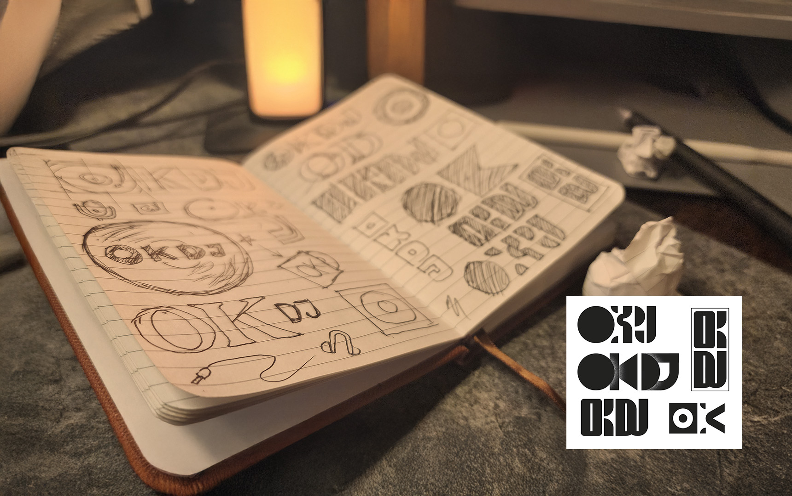
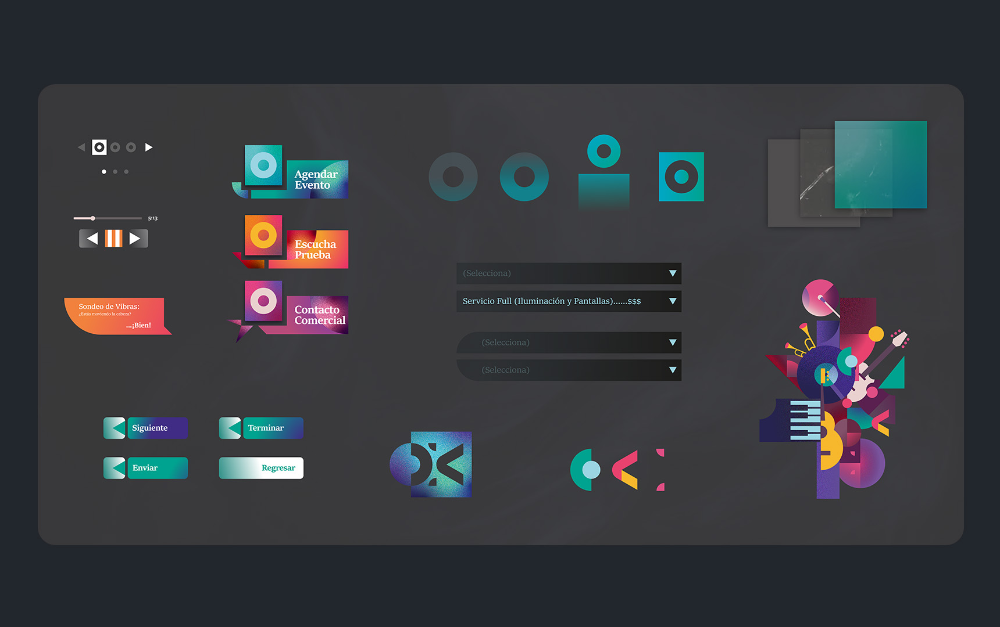
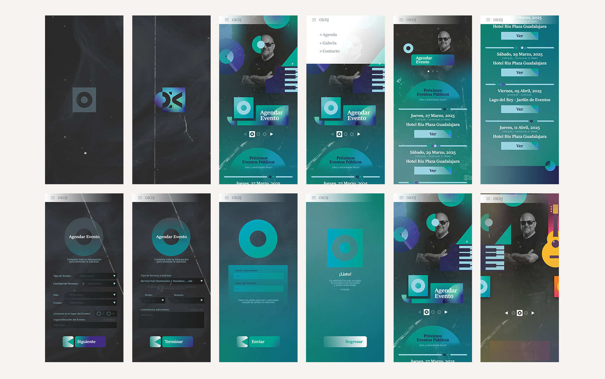
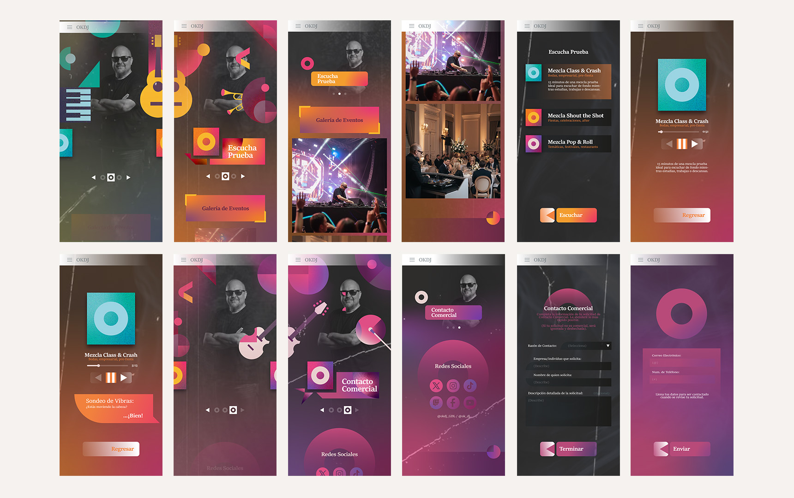

OKDJ
Booking Site
Saved the best for last? I appreciate your thorough
review of my work.
...
Designing the booking application for OKDJ was a brief yet highly
engaging project. My client, a local DJ from Guadalajara with a unique profile, presented an
intriguing creative challenge. At over 50 years old, his extensive musical background and deep
technical knowledge set him apart in the industry. The primary hurdle was the branding: I had to
manufacture a visual identity that harmonized his mature professional profile with the aesthetic
expectations of a predominantly younger market.
Designing the booking application for OKDJ was a brief
yet highly engaging project. My client, a local DJ from Guadalajara with a unique profile, presented
an intriguing creative challenge. At over 50 years old, his extensive musical background and deep
technical knowledge set him apart in the industry. The primary hurdle was the branding: I had to
manufacture a visual identity that harmonized his mature professional profile with the aesthetic
expectations of a predominantly younger market.
Great choice to start with.
...
Year: 2025
Skills: Branding, UX/UI
Design, Animation, Illustration, Storytelling
Role: Designer and
UX Tester
Year: 2025
Skills: Branding, UX/UI
Design, Animation, Illustration, Storytelling
Role: Designer and
UX Tester
(The following video provides an illustrative introduction to the
project)
Instead of hiding his age, I positioned it as a mark of experience and credibility. This strategy
preserves the trust of older clients while framing maturity as a competitive advantage for younger
audiences. The visual identity reflects this through a "contemporary vintage" aesthetic Bauhaus-ish
inspired structures blended with saturated gradients, grain textures, and abstract instrument
reinterpretations that reference various musical genres.
The logo, centered on a vinyl record
with a modern gradient, informs the site's motion language; interactions like form-filling and
transitions mimic the tactile experience of sliding a record into its sleeve, grounding the digital
experience in analog nostalgia.



The interface is designed for high-impact first impressions, using visual intensity to capture curiosity before guiding users toward a streamlined three-section structure: Agenda, Experience, and Commercial Contact. To bypass preconceived biases, I minimized personal data, allowing the site’s tone and structure to build his professional persona.

